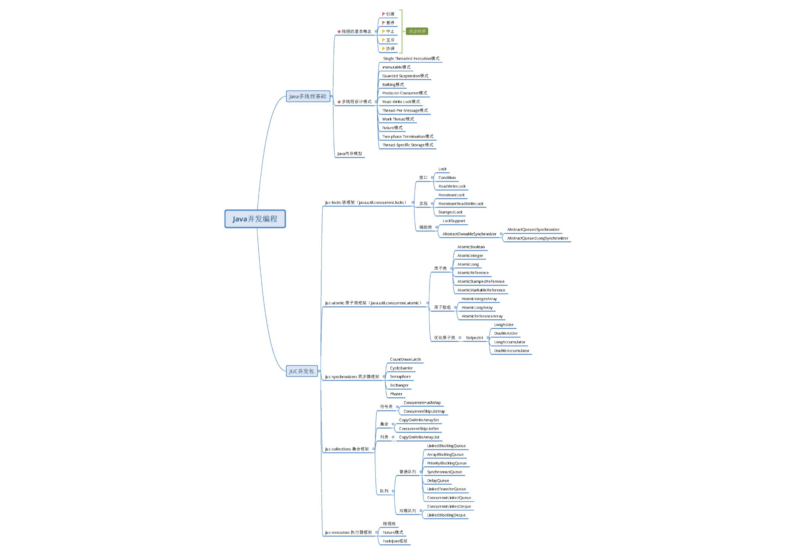
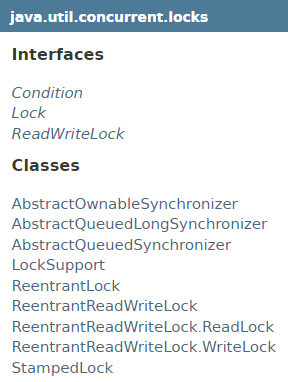
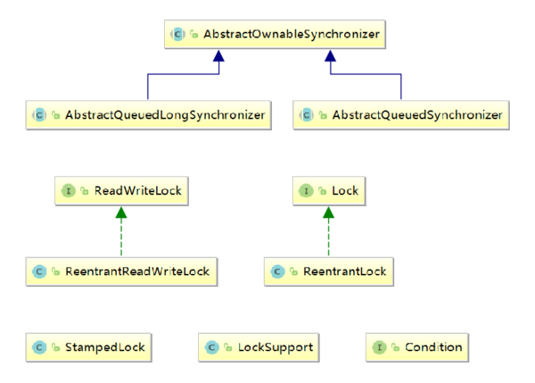
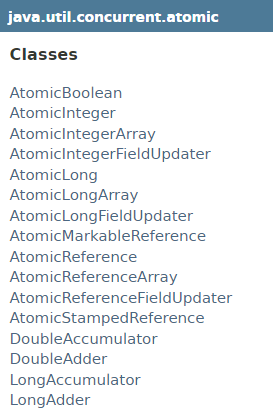
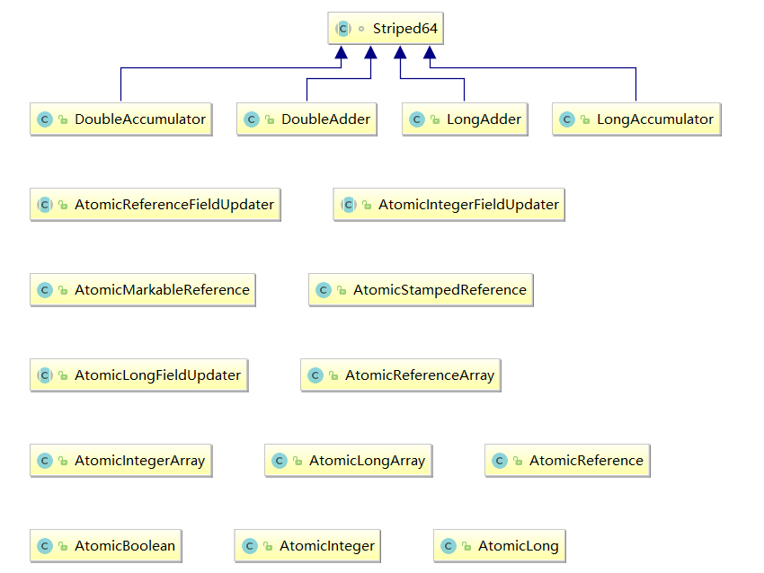

透彻理解Java并发编程系列
从本章开始，我们正式进入Java多线程系列的学习。透彻理解Java并发编程系列包括基础篇和进阶篇。初学者通过基础篇的学习，可以对多线程的初步使用有了基本概念和掌握。多线程这块知识的学习，真正的难点不在于多线程程序的逻辑有多复杂，而在于理清J.U.C包中各个多线程工具类之间的关系、特点及其使用场景（从整体到局部、高屋建瓴，这对学习任何知识都至关重要，如果读者能坚持阅读到本系列的Executors框架，你会明白我为什么强调全局视野的重要性）。
坦白的说，我还没有遇到过程序逻辑复杂到看不懂的生产级别的代码，所以要真正掌握Java多线程，必须要弄懂J.U.C，并不是说必须是源码级别的，深入源码确实能够让你掌握底层原理，但死扣细节往往造成“当局者迷”。所以，从本阶段开始，我将带领读者去理解J.U.C的设计思路和各个模块中的工具类的特点、用法，然后抽丝剥茧，深入每个工具类的底层实现。
如果你能跟着我的节奏，打开IDE，顺着我每篇进阶篇文章的思路去看J.U.C工具类的每行源码，回过头来，你会发现Java多线程领域最经典的《Java Concurrency in Practice》中的所有多线程设计原则、思想都包含在J.U.C的实现中，也会对整个J.U.C的设计有一个清晰的认识。
J.U.C包简介
J.U.C并发包，即java.util.concurrent包，是JDK的核心工具包，是JDK1.5之后，由 Doug Lea实现并引入。
整个java.util.concurrent包，按照功能可以大致划分如下：
- juc-locks 锁框架
- juc-atomic 原子类框架
- juc-sync 同步器框架
- juc-collections 集合框架
- juc-executors 执行器框架
本系列将按上述顺序分析J.U.C，分析所基于的源码为Oracle JDK1.8.0_111。
主要参考书籍：
- 《Java Concurrency in Practice》 Brian Goetz等
- 《JAVA多线程设计模式》 结城 浩
Java多线程基础系列主要是考虑没有接触过多线程的初学者，该系列完全参考自结城浩的《Java多线程设计模式》，感兴趣的读者可以先阅读该书后再来看进阶部分的文章。

juc-locks 锁框架
早期的JDK版本中，仅仅提供了synchronizd、wait、notify等等比较底层的多线程同步工具，开发人员如果需要开发复杂的多线程应用，通常需要基于JDK提供的这些基础工具进行封装，开发自己的工具类。JDK1.5+后，Doug Lea根据一系列常见的多线程设计模式，设计了JUC并发包，其中java.util.concurrent.locks包下提供了一系列基础的锁工具，用以对synchronizd、wait、notify等进行补充、增强。
java.util.concurrent.locks包的结构如下：

包内接口和类的简单UML图如下：

本部分包含以下文章：
- J.U.C之locks框架（1）：接口说明
- J.U.C之locks框架（2）：ReentrantLock 的使用
- J.U.C之locks框架（3）：ReentrantReadWriteLock 的使用
- J.U.C之locks框架（4）：LockSupport 工具类
- J.U.C之locks框架（5）：AbstractQueuedSynchronizer 综述
- J.U.C之locks框架（6）：AbstractQueuedSynchronizer 的独占功能原理
- J.U.C之locks框架（7）：Condition 原理
- J.U.C之locks框架（8）：AbstractQueuedSynchronizer 的共享功能原理
- J.U.C之locks框架（9）：ReentrantReadWriteLock 原理
- J.U.C之locks框架（10）：更强的读写锁——StampedLock
juc-atomic 原子类框架
早期的JDK版本中，如果要并发的对Integer、Long、Double之类的Java原始类型或引用类型进行操作，一般都需要通过锁来控制并发，以防数据不一致。
从JDK1.5开始，引入了java.util.concurrent.atomic工具包，该包提供了许多Java原始/引用类型的映射类，如AtomicInteger、AtomicLong、AtomicBoolean，这些类可以通过一种“无锁算法”，线程安全的操作Integer、Long、Boolean等原始类型。
所谓“无锁算法”，我们在讲juc-locks锁框架系列中，已经接触过太多次了，其实底层就是通过Unsafe类实现的一种比较并交换的算法，大致的结构如下（具体入参，根据上下文有所不同）：
boolean compareAndSet(expectedValue, updateValue);
当希望修改的值与expectedValue相同时，则尝试将值更新为updateValue，更新成功返回true，否则返回false。
java.util.concurrent.atomic包结构如下：

包内类的简单UML图如下：

本部分包含以下文章：
- J.U.C之atomic框架（1）：Unsafe类
- J.U.C之atomic框架（2）：AtomicInteger
- J.U.C之atomic框架（3）：AtomicReference
- J.U.C之atomic框架（4）：Atomic数组
- J.U.C之atomic框架（5）：AtomicXXXFieldUpdater
- J.U.C之atomic框架（6）：更强的原子类——LongAdder
juc-sync 同步器框架
这里的juc-sync同步器框架，是指java.util.concurrent包下一些辅助同步器类，每个类都有自己适合的使用场景：
| 同步器名称 | 作用 |
|---|---|
| CountDownLatch | 倒数计数器，构造时设定计数值，当计数值归零后，所有阻塞线程恢复执行；其内部实现了AQS框架 |
| CyclicBarrier | 循环栅栏，构造时设定等待线程数，当所有线程都到达栅栏后，栅栏放行；其内部通过ReentrantLock和Condition实现同步 |
| Semaphore | 信号量，类似于“令牌”，用于控制共享资源的访问数量；其内部实现了AQS框架 |
| Exchanger | 交换器，类似于双向栅栏，用于线程之间的配对和数据交换；其内部根据并发情况有“单槽交换”和“多槽交换”之分 |
| Phaser | 多阶段栅栏，相当于CyclicBarrier的升级版，可用于分阶段任务的并发控制执行；其内部比较复杂，支持树形结构，以减少并发带来的竞争 |
本部分包含以下文章：
https://www.tpvlog.com/article/37
- J.U.C之synchronizer框架（1）：倒数计数器——CountDownLatch
- J.U.C之synchronizer框架（2）：循环栅栏——CyclicBarrier
- J.U.C之synchronizer框架（3）：信号量——Semaphore
- J.U.C之synchronizer框架（4）：数据交换器——Exchanger
- J.U.C之synchronizer框架（5）：多阶段栅栏——Phaser
juc-collections 集合框架
这里的juc-collections集合框架，是指java.util.concurrent包下的一些同步集合类，按类型划分可以分为：符号表、队列、Set集合、列表四大类，每个类都有自己适合的使用场景，整个juc-collections集合框架的结构如下图：

其中阻塞队列的分类及特性如下表：
| 队列特性 | 有界队列 | 近似无界队列 | 无界队列 | 特殊队列 |
|---|---|---|---|---|
| 有锁算法 | ArrayBlockingQueue | LinkedBlockingQueue、LinkedBlockingDeque | / | PriorityBlockingQueue、DelayQueue |
| 无锁算法 | / | / | LinkedTransferQueue | SynchronousQueue |
本部分包含以下文章：
- J.U.C之collections框架（1）：ConcurrentHashMap的基本原理
- J.U.C之collections框架（2）：ConcurrentHashMap的扩容
- J.U.C之collections框架（3）：跳表——ConcurrentSkipListMap
- J.U.C之collections框架（4）：ConcurrentSkipListSet
- J.U.C之collections框架（5）：“写时复制”的应用——CopyOnWriteArrayList
- J.U.C之collections框架（6）：CopyOnWriteArraySet
- J.U.C之collections框架（7）：无锁队列——ConcurrentLinkedQueue
- J.U.C之collections框架（8）：无锁双端队列——ConcurrentLinkedDeque
- J.U.C之collections框架（9）：阻塞队列简介——BlockingQueue
- J.U.C之collections框架（10）：基于数组的阻塞队列——ArrayBlockingQueue
- J.U.C之collections框架（11）：基于单链表的阻塞队列——LinkedBlockingQueue
- J.U.C之collections框架（12）：基于堆的优先级阻塞队列——PriorityBlockingQueue
- J.U.C之collections框架（13）：特殊的同步队列——SynchronousQueue
- J.U.C之collections框架（14）：延时阻塞队列——DelayQueue
- J.U.C之collections框架（15）：基于双链表的阻塞双端队列——LinkedBlockingDeque
- J.U.C之collections框架（16）：LinkedTransferQueue
juc-executors 执行器框架
executors框架是整个J.U.C包中类/接口关系最复杂的框架，executors其实可以划分为3大块，每一块的核心都是基于Executor这个接口：
- 线程池
- Future模式
- Fork/Join框架
本部分包含以下文章：
- J.U.C之executors框架（1）：executors框架概述
- J.U.C之executors框架（2）：普通线程池——ThreadPoolExecutor
- J.U.C之executors框架（3）：计划线程池——ScheduledThreadPoolExecutor
- J.U.C之executors框架（4）：Future 模式
- J.U.C之executors框架（5）：Fork/Join 框架的原理
- J.U.C之executors框架（6）：Fork/Join 框架的实现
后续文章将从juc-locks锁框架开始，循序渐进得介绍各个框架中得多线程工具的使用方法和原理。